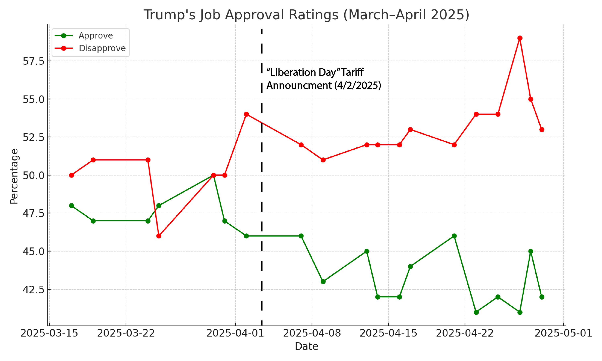

In contemporary media landscapes, political messaging often functions more like branding than policy communication. One of the best frameworks for analyzing this phenomenon comes from Roland Barthes, who argued in Mythologies that modern myths transform historical or political ideas into naturalized truths. In other words, stories that appear self-evident through repetition and visual reinforcement. This paper explores how President Donald Trump used the mythology of tariffs as a symbolic act of patriotism and economic revival, and how this myth has recently begun to fracture under the pressure of real-world consequences.
My creative project includes a globe made with three.js representing the worldwide impact of U.S. tariffs and a data visualization comparing public support for Trump’s tariffs over time. The globe represents the widespread impact of these tariffs, and the stress faced worldwide. The visualization presents a timeline of public opinion before and after key tariff announcements, supported by polling data from Gallup, The Washington Post, Pew Research Center, and Forbes. The sharp decline in approval and rising fears of inflation suggest a breaking point in the symbolic narrative once used to justify the tariffs. This essay breaks down the shift in public opinion and explains how media semiotics, polling, and digital design intersect to expose the truth and fragility of political mythmaking.
When Trump introduced tariffs on steel, aluminum, and later Chinese goods, he did so not merely as an economic intervention but as a performative act. The language he used to introduce the tariffs included “America First,” “The future of American competitiveness depends on [American manufacturing created by tariffs],” and “winning trade wars.” (The White House) This is nationalist imagery with ill intention. Barthes argues that myth works by removing history, including the complex reality of trade dependencies, global manufacturing networks, supply chains, and replacing it with the appearance of simple truth. Trump’s rhetoric fits this model perfectly: tariffs were rebranded as an act of independence, a defense of the working class, and a moral correction to decades of “unfair” trade.
The mythology was reinforced through visual media. Trump’s campaign and administration often paired tariff announcements with images of factory floors, steelworkers, and American flags. This combination of word and image, what Barthes calls anchorage, ensured that the policy appeared not as a political gamble, but as an inevitable return to a rightful past. In this way, the myth of the tariff shifted from an economic instrument into a symbol of national rebirth.
However, Barthes also suggests that myths can collapse when contradictions between appearance and reality become too apparent. As Trump’s trade war continued, the consequences of his tariffs became increasingly tangible. Farmers lost international buyers, consumer goods are set to rise dramatically in the coming months, and the massive increase in manufacturing jobs promised by the tariffs aren’t seen. (Herzlich et al.) According to a Gallup poll conducted in April 2025, 89% of Americans now believe the tariffs are driving up consumer prices, and 70% think they cost the U.S. more than they help. (Brenan) A Washington Post-ABC News-Ipsos poll from the same month found that 64% disapprove of Trump’s handling of tariffs, a significant reversal from early support in 2018–2019 (The Washington Post).
These numbers are more than statistics, they mark the erosion of belief. The once dominant mythology of the tariff is now subject to public skepticism. Where citizens once saw Trump as a “lone warrior” defending American industry, many now see the policy as economically self-defeating. Trump’s disapproval rating jumped as high as 59% in the past few weeks, the highest in his second term. (Dorn) The visualization in Figure 1 captures this shift through a timeline graph, showing rising disapproval ratings with key tariff events. The graph represents the shift in public opinion and emphasizes the disconnect between the symbolic narrative and the policy’s real-world impact.

Figure 1: Trump’s Job Approval Ratings - highlighting the changes after “Liberation Day” (ChatGPT)
Trump’s tariff policies are not just economic maneuvers; they are cultural texts, shaped by image, repetition, and symbolic framing. Barthes’ theory of mythologies provides a powerful lens to understand how political ideas are transformed into “common sense,” and how those myths can unravel under pressure. By combining polling data with visual analysis and representing global struggle with code, my project critiques the gap between the symbolic appeal of nationalist economic policies and their lived consequences. In a time when political communication is increasingly aestheticized, exposing the mechanics of myth becomes not just a scholarly exercise but an act of civic importance.